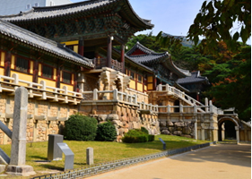
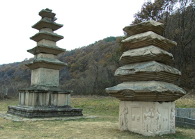
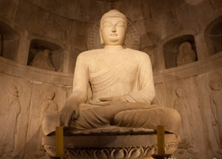
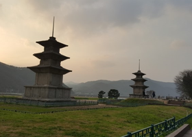
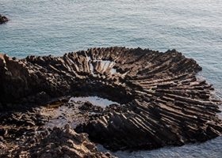

주변관광
토함산자연휴양림 주변관광지
- 
- 장항리사지 서오층석탑
- 장항리사지는 토함산 동쪽의 한 능성이 끝나는 기슭에 마련된 절터로서, 절의 이름을 정확히 알 숭 벗어 마을의 이름인 '장항리'를 따서 장항리사지라 부르고 있다.
- 홈페이지로 이동
- 
- 불국사
- 토함산 서남쪽에 자리잡은 불국사는 신라인들의 과학과 미학이 이뤄낸 통일신라 문화의 정수로 평가받고 있는데, 삼국 통일 이후 문화적 역량이 높았던 경덕왕 ...
- 홈페이지로 이동
- 
- 석굴암
- 석굴암은 신라시대 전성기의 최고 걸작으로 그 조영계획에 있어 건축, 수리, 기하학, 종교, 예술이 총체적으로 실현된 유산이며, 불국사는 불교교리가 사찰 건축 ...
- 홈페이지로 이동
- 
- 감은사터 삼층석탑
- 감은사는 원해 바다로 침입해 오는 왜적을 막기위해 문무왕이 지은 절인데, 절을 짓기 시작하지 1년만에 왕이 세상을 떠나자 아들인 신문왕이 아버지의 뜻을 받들어 절을 완공 ...
- 홈페이지로 이동
- 
- 주상절리
- 마그마에서 분출한 1000℃이상의 뜨거운 용암은 상대적으로 차가운 지표면과 접촉하는 하부와 자가운 공기와 접촉하는 상부에서부터 빠르게 냉각된다. 이렇게 냉각수축 작용 으로 ...
- 홈페이지로 이동
-
- 문무대왕릉
- 마그마에서 분출한 1000℃이상의 뜨거운 용암은 상대적으로 차가운 지표면과 접촉하는 하부와 자가운 공기와 접촉하는 상부에서부터 빠르게 냉각된다. 이렇게 냉각수축 작용 으로 ...
- 홈페이지로 이동